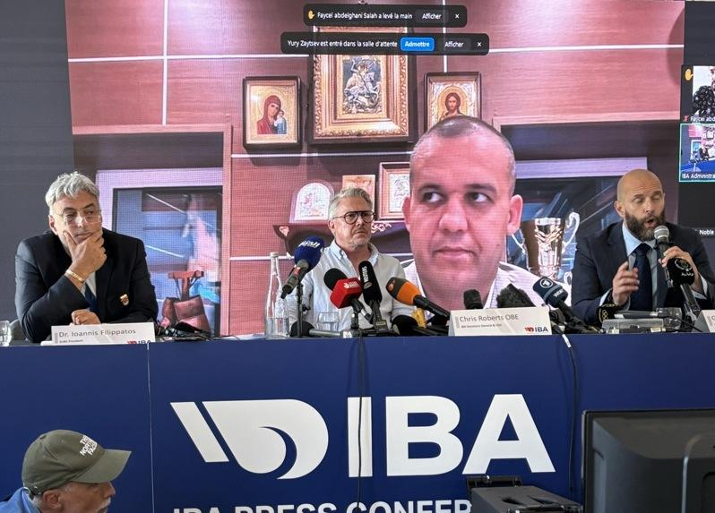

若要用一句话总结国际拳击总会（IBA）昨天说明林郁婷和克莉芙性别风波的记者会，就是「荒谬混乱」。指责两人是男性的同时，国际拳总毫无证据，空洞发言惹怒全场记者。
昨天中午12时30分，记者到达国际拳总在巴黎的记者会场地，等待他们说明女拳手林郁婷和克莉芙（Imane Khelif）去年世界拳击锦标赛遭取消资格的原因。还没进场，看到主办方还在架设口译设备，就知道记者会肯定无法准时开始。
进入会场，各国记者人数惊人，粗估超过60家媒体。
仔细想想也不奇怪，这里聚集了所有想得到的全球主流媒体，更别提大阵仗动员的阿尔及利亚记者，台湾记者也有3、4人到场。
原本下午1时要开始的记者会，被硬生生地拖到2时才开始。远程参与的国际拳总主席克列姆列夫（Umar Kremlev）原本要先发言，然而只见他在屏幕那端激动张嘴，记者会现场却一点声音都没有传达。
技术问题，只好让国际拳总首席执行官罗伯兹（Chris Roberts）先说。回头看，国际拳总应该感谢是由这位发言堪称正常的首席执行官起头，否则不知道记者会将歪到哪边去。
之后，克列姆列夫接起话筒，用俄语发言。尽管发言时间不短，整理起来也简单：一成谈「女性运动」和「女权」；两成表达自己是「虔诚基督徒」；七成批评国际奥林匹克委员会和国际奥会主席巴赫（Thomas Bach）。
他批评国际奥会贪腐，赞颂国际拳总「民主、透明」，还说「我不怕巴赫，是巴赫怕我」。仿佛在听小学生吵架，现场记者开始翻白眼。
最后，克列姆列夫竟然说，巴赫是「鸡奸者之王」，让记者一度怀疑自己听错。
接着是备受期待的国际拳总前医学委员菲利帕兹（Ioannis Filippatos）发言。记者把获得实质数据与佐证的希望都放在他身上。
没想到，这位医生花了5分钟讲述自己经验、接生了多少孩子，然后开始帮大家科普「染色体核型」在鉴定性别中的角色。
各国记者耐性此时到了极限。一名德国电视台记者首先举手，尖锐地说：「你还要继续闲聊吗？还是你要拿出数据？」菲利帕兹显然慌了手脚。
另一名记者拿到麦克风，逼问：「照你们的检测，两位选手到底是男性、跨性别？你们到底想说什么？」
菲利帕兹这才说，染色体显示，两人为XY，是男性。那证据和数据呢？仍是问了一个寂寞。
菲利帕兹还想挽回，问大家：「我说得不清楚吗？」记者一致高声回复：「不清楚。」
他表示：「我们不能全说。」记者秒回：「那我们在这干嘛？」菲利帕兹避重就轻的回答不断被打断，最后菲利帕兹也怒了，回嘴：「你行你说。」
这时，记者提问已如溃堤潮水，气氛越发紧张。双方情绪逐渐激动，记者会正往失控方向前进，开始有种荒谬到超写实的感觉。
记者追问大约分两大重点：一是要实质证据，二是时机点。为何2022年检测出有问题，要等2023年才再次检测；然后巴黎奥运开打后，才大开记者会？
对于这些提问，一样是没有回复，得到的只有跳针：「我们不是歧视」、「不针对国家或选手」、「选手安全为重」等。
克列姆列夫回答提问时，一名网络参与者开始比倒赞，并尝试发言。这位参与者马上被噤声，然后被踢下线。
笔者坐在第一排司仪对角线，和记者会前就聊起来的巴黎人报（Le Parisien）记者两人手举得要断了，奈何都得不到司仪的青睐点名。
会议前，「巴黎人报」记者就跟笔者说，他们才刚写一篇报导，分析林郁婷和克莉芙显然成了国际拳总斗国际奥会的无辜受害者。
站在司仪前的公视记者抢到麦克风，为台湾提问。然而，就当克列姆列夫进行着空洞的回复时，场上已有一半记者没在听了。
因为现场来了一位披着阿尔及利亚国旗的抗议者入场，大批记者包围采访。显然，一位年轻拳击手的抗议比主席的发言还有趣多了。
路透关了直播，英国广播公司（BBC）提早离场。就这样，记者自行结束这场凸显国际拳总组织混乱、不知所云的记者会。
记者起身，和身边的法国、英国、阿根廷、阿尔及利亚记者相视而笑，无奈摇着头。
「太荒谬了。」记者说；一旁的记者回道：「是啊，大概是我参加过最不知所云的记者会了。」
巴黎奥运热话题
- 拜尔丝向她鞠躬 巴西金牌安德拉德 从贫民窟走向女王
- 郑钦文备战北美赛季 无缘担任中国队闭幕式掌旗官
- 感人瞬间 中国何冰娇摘银 颁奖台上却秀了西班牙徽章
- 美国队莱尔斯「龟派气功」庆夺金 日媒：跑最快的动漫迷
- 男足／法国、西班牙争金 摩洛哥与埃及抢铜牌